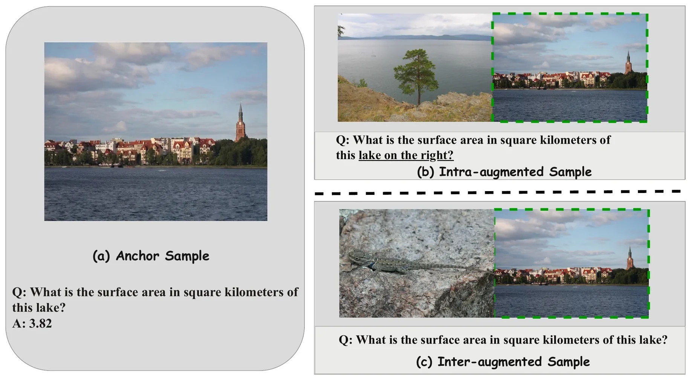

Identifying and Resolving Pitfalls of Knowledge-Based VQA Benchmarks: Auditing, Repairing, and Augmenting
Accuracy on E-VQA and InfoSeek only measures knowledge-grounded reasoning if answers are derivable, questions are well-posed and images need real disambiguation. We audit both benchmarks, repair them, and add distractor-entity variants; model rankings change under both.